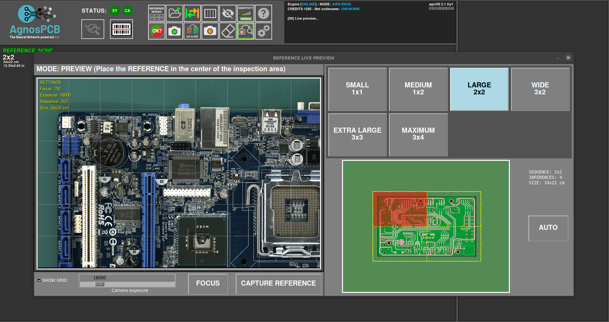
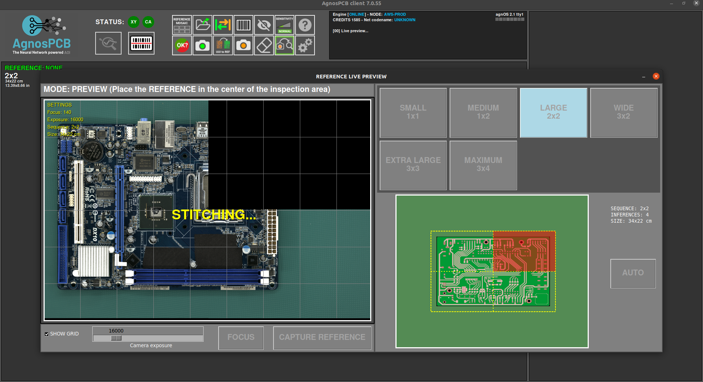
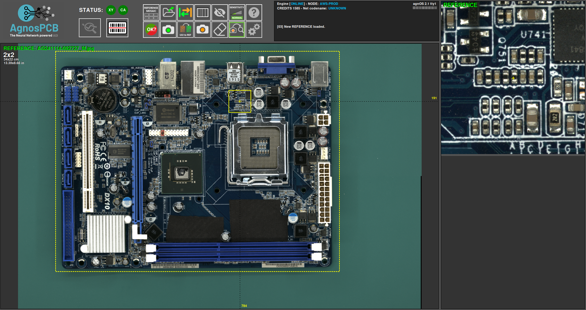
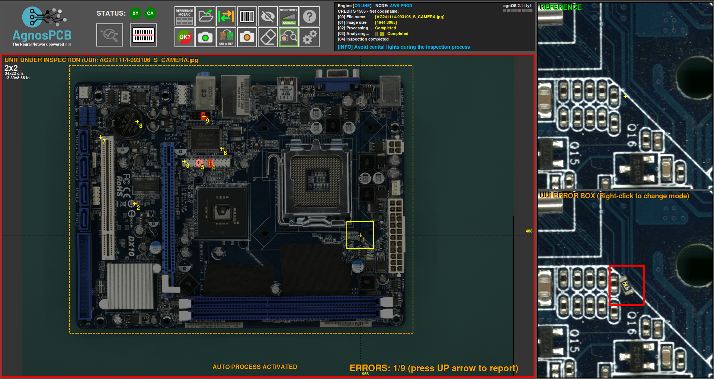

Flusso di lavoro dell'ispezione
Avvio del software
- Collegare l'alimentazione alla piattaforma di ispezione sul pannello posteriore
- Accendere il monitor
- Collegare l'alimentazione al computer e accenderlo
- Una volta che il sistema si è avviato, aprire l'app facendo doppio clic sull'icona del desktop
- Solo per unità ONLINE: apparirà una finestra di accesso che richiederà le credenziali dell'account AgnosPCB. Le credenziali verranno memorizzate nell'unità per usi futuri e non sarà richiesto di accedere nuovamente.

Procedura di ispezione
Generazione di un RIFERIMENTO
Il software AgnosPCB Inspection tool "confronterà" la fotografia del circuito/pannello di RIFERIMENTO ("golden sample") con tutte le foto che scatterete del circuito da ispezionare (foto da "ANALIZZARE").
Importante
Si consiglia di visitare la nostra sezione suggerimenti prima di scattare la prima immagine.
Per procedere con l'acquisizione del RIFERIMENTO, fare clic sull'icona del riferimento nel menu principale:

Apparirà una nuova finestra con diversi strumenti:

In questa finestra dobbiamo impostare le immagini necessarie per coprire l'intera PCBA.

Nel caso in cui non riusciate a determinare quante immagini sono necessarie per coprire la vostra PCBA/pannello, potete posizionare la vostra PCBA/pannello al centro dell'area di ispezione e premere il pulsante AUTO. Il sistema scansionerà la PCBA/il pannello e imposterà automaticamente le proporzioni ottimali.

Nella parte inferiore della finestra è possibile impostare/rimuovere la griglia nell'anteprima live e impostare l'esposizione per scattare l'immagine.

Importante
Il valore predefinito impostato (16000) è il valore ottimale nella maggior parte dei casi. Regolare questo parametro solo in caso di componenti molto chiari/scuri che sono difficilmente visibili dal software.
Questa finestra consente di spostare la telecamera in qualsiasi quadrante della PCBA. Basta fare clic sul quadrante desiderato nella miniatura.

La telecamera metterà a fuoco l'area selezionata una volta iniziata l'acquisizione.
Importante
Per una corretta messa a fuoco, selezionare un'area senza componenti alti.
È anche possibile mettere a fuoco l'ottica prima di avviare l'acquisizione premendo il pulsante FOCUS. Ciò aiuta a trovare un'area in cui l'ottica mette a fuoco correttamente.

Per avviare l'elaborazione dell'acquisizione, è sufficiente fare clic sul pulsante CATTURA RIFERIMENTO. L'AOI metterà a fuoco automaticamente nel quadrante selezionato e inizierà a catturare l'intera PCBA in pochi secondi.


Dopo aver catturato la PCBA, apparirà la finestra del mosaico che consente di archiviare l'immagine per un utilizzo rapido.
Nota
Tutti i RIFERIMENTI acquisiti verranno archiviati automaticamente. Il mosaico aiuta a caricare rapidamente i RIFERIMENTI più utilizzati.

Una volta terminato il processo di acquisizione, l'immagine di RIFERIMENTO verrà visualizzata nella finestra principale e vi consentirà di impostare maschere di esclusione o disegnare un'area codice a barre per la lettura.

Acquisizione di una UUI
Dopo aver generato o caricato una precedente immagine di RIFERIMENTO, possiamo procedere con l'acquisizione dell'immagine UUI (Unità Sotto Ispezione) premendo il pulsante.

Apparirà una finestra di anteprima live che mostra un'immagine fantasma dell'immagine di RIFERIMENTO. Questo aiuta ad allineare la PCBA UUI con il RIFERIMENTO.
Importante
Il software AgnosPCB è in grado di allineare automaticamente entrambe le immagini (RIFERIMENTO e UUI). Tuttavia, è importante posizionare correttamente la PCBA UUI per evitare deformazioni geometriche che possono causare rilevamenti di falsi positivi.

Il processo di acquisizione inizierà facendo clic sul pulsante AVVIA ISPEZIONE.
Nota
La messa a fuoco non è necessaria poiché il parametro di messa a fuoco è già memorizzato con l'immagine di RIFERIMENTO, rendendo l'ispezione molto veloce.
Il processo di ispezione sarà eseguito in parallelo in caso di ispezione multi-immagine.
Una volta terminato il processo di acquisizione, verrà restituito il risultato finale che mostra gli errori rilevati, se presenti. È possibile modificare la sensibilità di rilevamento premendo il pulsante nella finestra principale o premendo il tasto 1, 2 o 3.


Se vengono rilevati errori, apparirà una cornice rossa attorno alla finestra principale. Cornice verde se non ci sono errori.
Segnalazione degli errori
Una volta completata l'ispezione, l'operatore deve monitorare gli errori segnalati, contrassegnandoli come errore effettivo o rilevamento falso positivo. Per fare ciò, è sufficiente scorrere gli errori utilizzando le frecce sinistra e destra sulla tastiera.
Per contrassegnare un errore reale, basta spostarsi sul difetto e premere la freccia su sulla tastiera. Apparirà una nuova finestra che mostra il difetto in dettaglio e consente di classificarlo selezionando un tipo di difetto dall'elenco.

Inoltre, c'è un campo vuoto per aggiungere un commento.
Nel caso in cui l'operatore trovi un errore non rilevato dal software, è possibile segnalarlo e riportarlo spostando il cursore sull'area del difetto e premendo il tasto freccia su. La finestra di segnalazione apparirà come di consueto.
Quando il software segnala un'area che non è un errore effettivo, l'operatore può contrassegnarla come falso positivo premendo il tasto freccia giù. Apparirà anche una finestra che consente di aggiungere un commento.

Nota
Si noti che l'icona rossa  contrassegna i difetti effettivi e l'icona verde
contrassegna i difetti effettivi e l'icona verde  i difetti falso positivo.
i difetti falso positivo.
Generazione di un report PDF finale
Una volta terminata la segnalazione, l'operatore può generare un report PDF finale premendo il seguente pulsante:

Appare una finestra che consente di contrassegnare l'ispezione come OK o NON OK. Se la PCBA supera il controllo qualità con successo, premere l'icona verde.

È possibile aggiungere commenti che verranno inclusi nel report. Il PDF verrà generato nella cartella REPORTS.